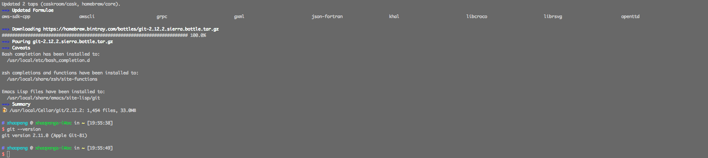

git
git 现在也是很重要很重要的工具,必装软件.
使用 Xcode command line tools 自带了 git, 可能不会最新版本,我一般都会使用 brew 来自己安装.
安装
brew install git

配置
配置用户名和邮箱
git 必须要配置用户名和邮箱,用来git 记录使用.
git config --global user.name "Your Name Here"
git config --global user.email "your_email@youremail.com"
永久存储账号密码
默认使用 git 进行操作的时候,都需要输入用户名和密码的,不太方便,运行一下命令来永久存储.
git config --global credential.helper osxkeychain
别名设置
git 操作有时候会很麻烦,设置一些别名简化命令的输入.
alias g="git $*"
alias gc="git commit -m $*"
alias gp="git push"
alias gpp="git pull"
alias ga="git add"
alias gaa="git add ."
alias gs="git status"
alias gl="git log --oneline --all --graph --decorate $*"
注:
将上面的代码可以添加到 ~/Projects/config/env.sh 中.
Git常用备忘
配置
git config --global user.name "robbin"
git config --global user.email "fankai@gmail.com"
git config --global color.ui true
git config --global alias.co checkout
git config --global alias.ci commit
git config --global alias.st status
git config --global alias.br branch
git config --global core.editor "mate -w" # 设置Editor使用textmate
git config -l # 列举所有配置
Git常用命令
查看、添加、提交、删除、找回，重置修改文件
git help <command> # 显示command的help
git show # 显示某次提交的内容
git show $id
git co -- <file> # 抛弃工作区修改
git co . # 抛弃工作区修改
git add <file> # 将工作文件修改提交到本地暂存区
git add . # 将所有修改过的工作文件提交暂存区
git rm <file> # 从版本库中删除文件
git rm <file> --cached # 从版本库中删除文件，但不删除文件
git reset <file> # 从暂存区恢复到工作文件
git reset -- . # 从暂存区恢复到工作文件
git reset --hard # 恢复最近一次提交过的状态，即放弃上次提交后的所有本次修改
git ci <file>
git ci .
git ci -a # 将git add, git rm和git ci等操作都合并在一起做
git ci -am "some comments"
git ci --amend # 修改最后一次提交记录
git revert <$id> # 恢复某次提交的状态，恢复动作本身也创建了一次提交对象
git revert HEAD # 恢复最后一次提交的状态
查看文件diff
git diff <file> # 比较当前文件和暂存区文件差异
git diff
git diff <$id1> <$id2> # 比较两次提交之间的差异
git diff <branch1>..<branch2> # 在两个分支之间比较
git diff --staged # 比较暂存区和版本库差异
git diff --cached # 比较暂存区和版本库差异
git diff --stat # 仅仅比较统计信息
查看提交记录
git log
git log <file> # 查看该文件每次提交记录
git log -p <file> # 查看每次详细修改内容的diff
git log -p -2 # 查看最近两次详细修改内容的diff
git log --stat # 查看提交统计信息
分支合并和rebase
git merge <branch> # 将branch分支合并到当前分支
git merge origin/master --no-ff # 不要Fast-Foward合并，这样可以生成merge提交
git rebase master <branch> # 将master rebase到branch，相当于：
git co <branch> && git rebase master && git co master && git merge <branch>
Git补丁管理(方便在多台机器上开发同步时用)
git diff > ../sync.patch # 生成补丁
git apply ../sync.patch # 打补丁
git apply --check ../sync.patch # 测试补丁能否成功
Git暂存管理
git stash # 暂存
git stash list # 列所有stash
git stash apply # 恢复暂存的内容
git stash drop # 删除暂存区
Git远程分支管理
git pull # 抓取远程仓库所有分支更新并合并到本地
git pull --no-ff # 抓取远程仓库所有分支更新并合并到本地，不要快进合并
git fetch origin # 抓取远程仓库更新
git merge origin/master # 将远程主分支合并到本地当前分支
git co --track origin/branch # 跟踪某个远程分支创建相应的本地分支
git co -b <local_branch> origin/<remote_branch> # 基于远程分支创建本地分支，功能同上
git push # push所有分支
git push origin master # 将本地主分支推到远程主分支
git push -u origin master # 将本地主分支推到远程(如无远程主分支则创建，用于初始化远程仓库)
git push origin <local_branch> # 创建远程分支， origin是远程仓库名
git push origin <local_branch>:<remote_branch> # 创建远程分支
git push origin :<remote_branch> #先删除本地分支(git br -d <branch>)，然后再push删除远程分支
Git远程仓库管理
git remote -v # 查看远程服务器地址和仓库名称
git remote show origin # 查看远程服务器仓库状态
git remote add origin git@github:robbin/robbin_site.git # 添加远程仓库地址
git remote set-url origin git@github.com:robbin/robbin_site.git # 设置远程仓库地址(用于修改远程仓库地址)
git remote rm <repository> # 删除远程仓库
创建远程仓库
git clone --bare robbin_site robbin_site.git # 用带版本的项目创建纯版本仓库
scp -r my_project.git git@git.csdn.net:~ # 将纯仓库上传到服务器上
mkdir robbin_site.git && cd robbin_site.git && git --bare init # 在服务器创建纯仓库
git remote add origin git@github.com:robbin/robbin_site.git # 设置远程仓库地址
git push -u origin master # 客户端首次提交
git push -u origin develop # 首次将本地develop分支提交到远程develop分支，并且track
git remote set-head origin master # 设置远程仓库的HEAD指向master分支
也可以命令设置跟踪远程库和本地库
git branch --set-upstream master origin/master
git branch --set-upstream develop origin/develop